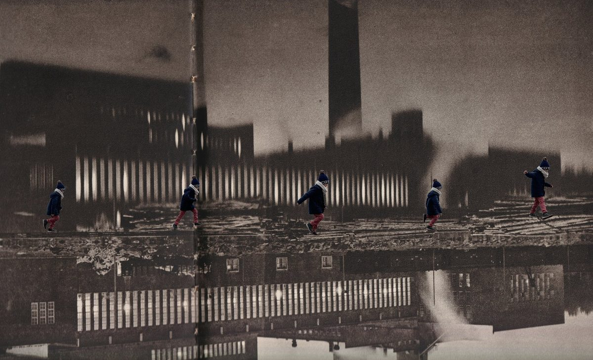
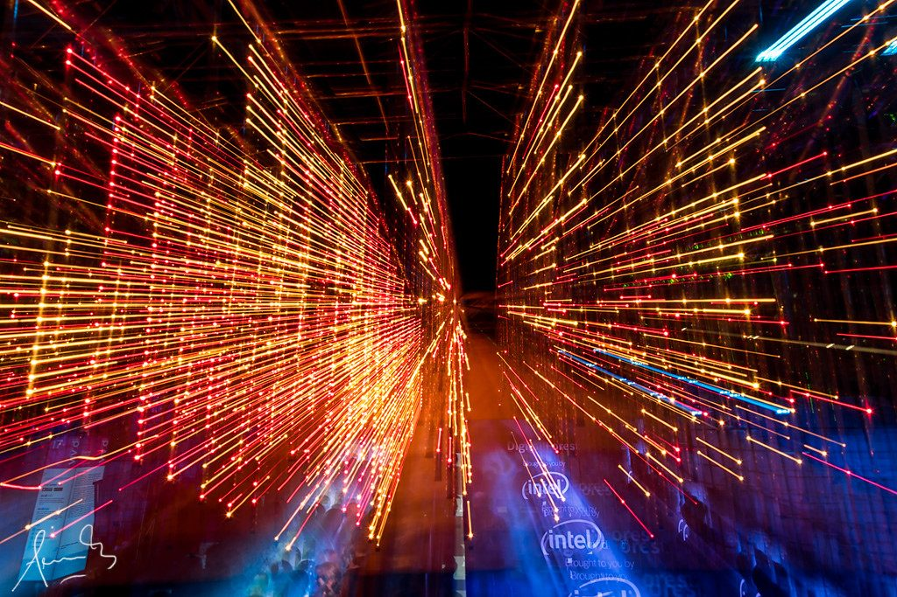
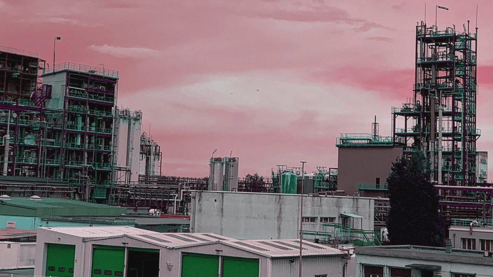
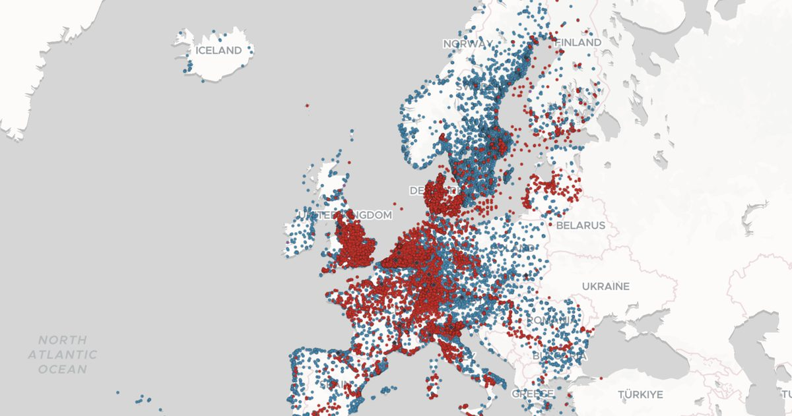

· The Black Sea
Investigations, articles and data stories, newest first. Every tile links to the piece where it was published.
One tile per article: its preview picture, the date it ran, the headline and the first lines of the piece. The list lives in tools/publications.json — add a link there and run tools/make_publications.py, which reads the article page once and fills in the rest.

· The Black Sea
· EUobserver

· EUobserver

The Forever Pollution Project

The Forever Pollution Project